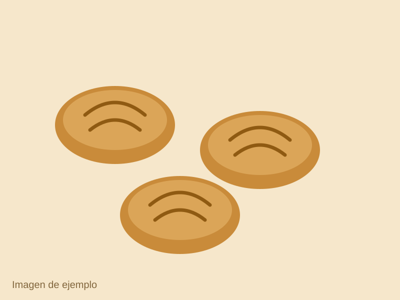
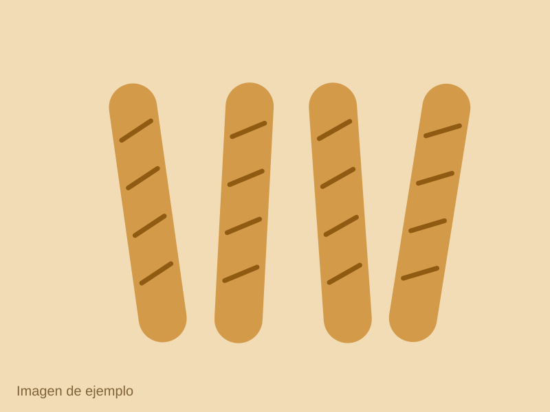
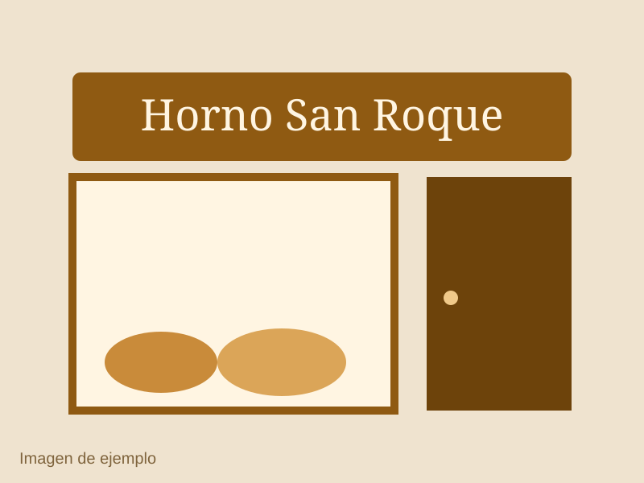

Servicios
Hogaza de masa madre
Fermentación de 24 horas.
3,20 €Barra de pueblo
La de todos los días.
1,10 €Empanada
De atún, carne o zamburiñas. Por encargo.
Desde 14 €Bollería
Cruasanes y napolitanas de mantequilla.
Desde 1,40 €Precios con IVA incluido.
Fotos



Horario
| Lunes a sábado | 7:30 – 14:30 |
| Domingo | 8:30 – 14:00 |